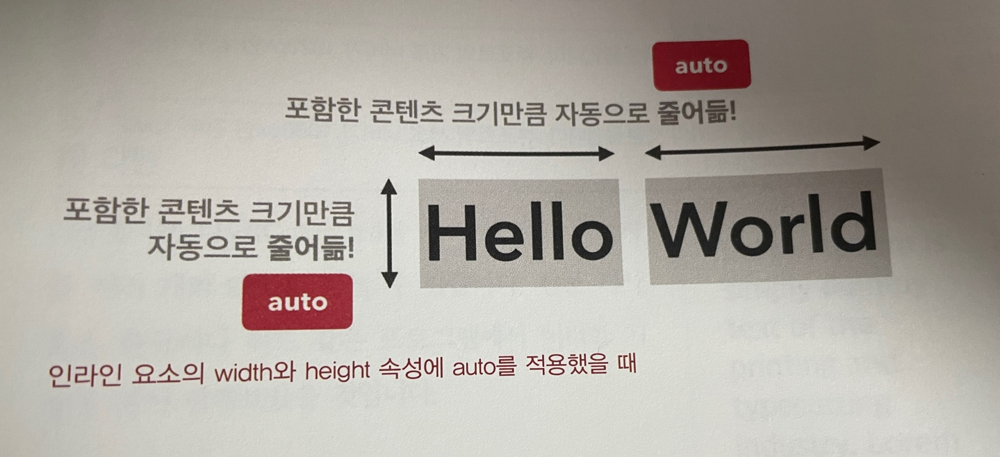
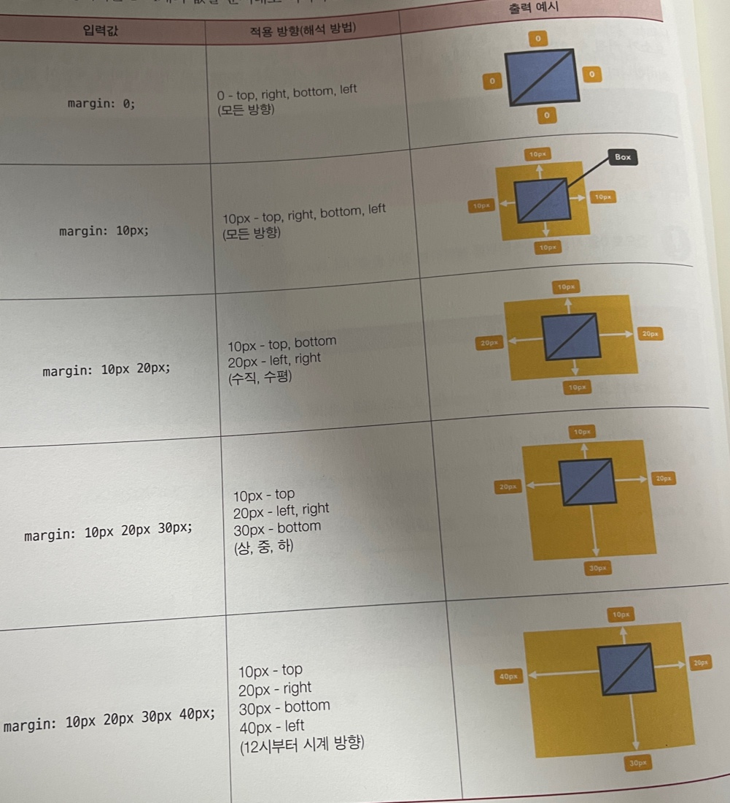
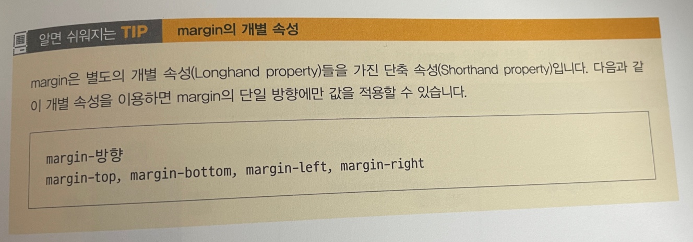

↑블록 요소인 div에 width속성은 적용하지 않고 height 속성만 200px로 입력했을때
margin은 값으로 음수를 가질 수 있음. 즉 margin:-10px;과 같이 적용 가능.(기본값은 0으로 외부여백이 없는 상태임)
 ↑상단 두개 이미지는 외부여백 10px로만 지정한것
기본값은 0으로 margin과 달리 음수를 사용할수 없음
padding 속성은 요소 내부에 여백을 추가하는 속성이기 때문에, 요소의 크기가 지정한 가로/세로 값보다 커짐
만약 자신이 지정한 가로/세로 너비를 유지하면서 내부 여백이 추가되길 원한다면, 요소에 box-sizing: border-boxl;속성과 같은 값을 추가하면됨
↑ 여백(분홍색) 가로 400px, 세로250px, 백그라운드컬러 라이트핑크
분홍색여백 내 이미지를first-child로 하여 내부여백 20px로 진행(이미지 크기 200PX)
padding 속성도 margin속성처럼 1~4개의 값은 순서대로 입력하여 요소의 내부 여백을 지정할 수 있음
padding 속성의 해석방법음 margin과 같음
border: 두께 종류 색상
↑이미지에 테두리 넣기